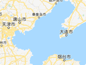
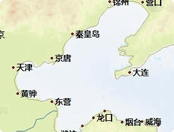
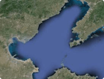

船名、呼号、MMSI、IMO
筛选
海图
关注
船舶
台风
测距
设置
详情
关注
轨迹
联系平台
七天轨迹
30天轨迹
隐藏轨迹
关闭
重置
选择主题

地图

海图

卫星图
船舶筛选
船舶类型
目的港口
到港时间
吃水状态
船舶吨位
船舶长度
到港时间
点击输入
最小吨位
最大吨位
重置
确定
共查询到
条相关数据
设置
全球潮汐
海区预报
显示港口
我的关注
我的船队
关注的船
AIS信息
船舶档案
历史航次
海洋气象